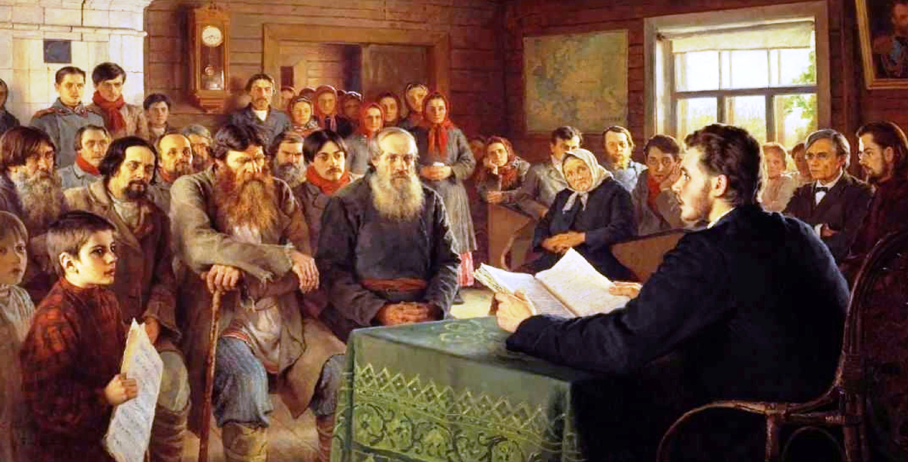

История улицы
В нашем городе два проспекта: Ленинградский и проспект Губкина. Чем же эти две улицы нашего муниципалитета заслужили такой статус? Слово «першпектива», позже «проспект», появилось в русском языке в XVIII веке, при строительстве Санкт-Петербурга. Первоначально так называли самые широкие прямые улицы этого строящегося города. Главная улица, ось южной части города Новый Уренгой – Ленинградский проспект – полностью подходит под это определение. Проспект Губкина тоже по праву носит свой статус, поскольку он широк, прям и соединяет южную и северную части города. Однако эту свою функцию он стал выполнять не сразу, поскольку северный жилой массив города появился только в результате масштабного строительства 1985-1995 годов. В 1980-90-х годах облик территории города, где прошел проспект Губкина, разительно менялся. Давайте посмотрим старые фотографии.
Следующий этап развития города в районе проспекта Губкина был связан с возведением капитальных железобетонных домов и школы № 1.
Кто такой Иван Михайлович Губкин?
Смотреть старые фотографии и следить за развитием города всегда интересно. Но теперь мы поговорим о человеке, именем которого назван проспект в Новом Уренгое, ещё два проспекта в городах Омск и Старый Оскол, аэропорт города Новый Уренгой, улицы в 23 населённых пунктах нашей страны, Российский государственный университет нефти и газа, нефтегазоконденсатное месторождение в Западно-Сибирской провинции, банка в Карском море, скалы в Антарктиде и даже два города – Губкинский на Ямале и Губкин в Белгородской области. Не каждый крупный государственный деятель удостаивается такой чести. Чем же прославился Иван Михайлович Губкин?
Как ученик стал учителем
Ваня Губкин родился в 1871 году, в селе Поздняково Муромского уезда Владимирской губернии. Он был сыном бедного крестьянина. Неграмотные родители Губкина, которые обладали сокровищем в виде пяти сыновей, считали излишним обучать грамоте своих детей. Лишь благодаря требованиям бабушки Федосьи Никифоровны Ивана отдали учиться в сельскую школу. Бабушка разыскала конторские бланки для изготовления тетрадей, сшила Ивану сумку для походов в школу. Успехи Губкина в освоении школьной программы стали заметны с первых месяцев. Он был круглым отличником. По этой причине у него было очень мало друзей, а мальчишки-одноклассники дразнили его, называя «школяр» и «превосходительство».

Когда сельская школа осталась позади, отец Ивана настаивал на том, чтобы тот вступил в должность конторщика или лавочника. Но Иван сдал экзамены и поступил в Киржачскую учительскую семинарию, которую окончил в 1890 году. После чего получил место учителя в дальнем селе Жайское. За стипендию, которую он получал в учительской семинарии, размером 6 рублей 57 копеек он должен был после ее окончания 5 лет отработать народным учителем. Таковы были правила. Иван Михайлович честно и отработал – сначала в селе Жайское, а потом в муромском селе Карачарово. Там вёл обычную для человека своей профессии жизнь – учил детей, в свободное время рыбачил на Оке, читал книги и газеты, писал статьи об обучении на селе в журнал «Образование».
Отец с матерью гордились выбившимся в люди сыном, но судьба дала Ивану Михайловичу шанс прожить вторую жизнь. В то время он дружил с местным священником, и как-то на чердаке его дома обнаружил книги о геологии, оставшиеся от родственника, уехавшего в Сибирь. Эти книги очень заинтересовали Губкина, мысль стать геологом с тех пор не покидала учителя.
Мечта жизни — геология
В 1895 Губкин поступил в Санкт-Петербургский учительский институт – одно из лучших средних педагогических учебных заведений России. По окончании института он преподавал в учебных заведениях Санкт-Петербурга. Сначала в приюте им. принца Ольденбургского, затем в Сампсоньевском городском училище. В это время он женился на Нине Калиновской, дочери священника из Кубани, с которой познакомился в столице в 1897 году.
От этого союза родились сын Сергей, ставший впоследствии академиком и крупным специалистом в области металловедения, и дочь Галина, которая мечтала и стала летчиком. Учёный всегда желал своим любимым детям только добра, не забывая о них в своих длительных разъездах. Он интересовался их успехами, увлечениями и достижениями, а также часто высылал деньги. В одном из многочисленных писем своей жене, он говорит о том, что желает своим детям интересной и наполненной событиями жизни. Губкин хотел стать геологом и мечтал о получении высшего образования, однако из-за отсутствия свидетельства об окончании гимназии или реального училища ему было отказано в приеме в Санкт-Петербургский политехнический институт. Только весной 1903 года настырный Иван Михайлович экстерном сдал экзамен за курс классической гимназии и осенью того же года был принят в Горный институт в Санкт-Петербурге, где на одно место был конкурс в 12-14 человек.
Тяга к профессии так влекла Ивана Михайловича, что в 1910 году он закончил Горный институт с отличием. Его имя в числе лучших выпускников было занесено на мраморную доску института.

В 1914 году он женился на Варваре Боярской, сохраняя тёплые отношения со своими детьми от первого брака. В 39 лет И. М. Губкин начал карьеру геолога, и был зачислен научным сотрудником Геологического комитета. А в 40 лет он впервые увидел нефть во время работ на Кавказе. За первые годы в науке он, как тогда говорили, «составил себе имя» исследованиями грязевых вулканов Азербайджана и нефтяных месторождений Северного Кавказа. Почему? Потому что здесь он впервые применил новый метод построения карты подземного рельефа. Такой метод составления геолого-структурных карт получил затем широкое распространение в СССР и других странах. Впервые в мире Губкин установил новый, рукавообразный тип залежей нефти, который в Америке стал известен гораздо позже, под названием шнурковых залежей. Их открытие раскрыло перед нефтяниками широкие перспективы поисков нефти в новых геологических условиях. В 1917 году Временное правительство России направило Губкина в командировку в США для изучения положения в нефтяной промышленности. Обратно в 1918 году ему пришлось возвращаться совсем в другую страну, в которой он оказался востребован. Ивану Михайловичу повезло.
Красный академик
Молодая советская республика остро нуждалась в новых специалистах. В. И. Ленин дал указание Губкину стать участником комиссии комитета, занимавшегося вопросами нефтедобычи. После этого определения Иван Михайлович до своих последних дней руководил несколькими важнейшими учреждениями, которые занимались сферой нефтяной промышленности, а также геологической службой в СССР.

Вот главные вехи его пути: член коллегии Главного нефтяного комитета (1918-1929); член Госплана СССР (1921-1929); Председатель Совета нефтяной промышленности (1922-1929); директор Московского отделения Геологического комитета (1923-1929); профессор, проректор, ректор Московской горной академии (1920-1930); Председатель Особой комиссии по изучению Курской магнитной аномалии (1920-1925); директор Государственного исследовательского нефтяного института (1925-1934); председатель Совета по изучению производительных сил СССР (1930-1936); начальник главного геологического управления СССР (1930-1939); организатор и директор Московского нефтяного института (1930-1939); директор Института горючих ископаемых АН СССР (1934-1939); вице-президент АН СССР (1936-1939). Подведём итог одной фразой. После 1917 г. Губкин стал главным нефтяником страны.

Основатель советской геологии
Губкин, попав в геологию в довольно зрелом возрасте, как никто другой понимал – нужно создать систему образования советских геологов. Он и был её отцом-основателем. Начиная с 1922 года Губкин на протяжении восьми лет возглавлял Московскую горную академию. Он разработал и ввёл несколько кардинально новых кафедр, ориентированных на изучение различных разделов науки о нефти. Созданный в 1930 году Нефтяной институт Москвы базировался именно на этих новых кафедрах. Студенты, посещавшие новообразованные учебные заведения, изучали специализированные курсы и предметы, которые были введены в программу с подачи Губкина.

Учёный написал 150 научных работ, в том числе учебников по геологии нефти. В 1920 году по инициативе И. М. Губкина был организован журнал «Нефтяное и сланцевое хозяйство», бессменным редактором которого он был до конца жизни. Губкин на основе теории В. И. Вернадского разработал теорию нефтеобразования и формирования нефтяных месторождений. Он выступал за биогенное их образование. Иван Михайлович писал: «Мы полагаем, что нефтеобразование, начавшись с разложения жиров в биогенном иле до его погребения, продолжалось и после его погребения при активном содействии анаэробных бактерий во весь период диагенетического изменения породы».

Иван Михайлович был сыном советской страны и переживал вместе с ней все этапы её истории. Он, будучи в когорте первых «красных» академиков, участвовал в искоренении прежней императорской Академии наук. Многие учёные дореволюционной геологической школы в результате этой политики были репрессированы. Но не за это Иван Михайлович удостоен почёта и уважения. В решениях XVIII съезда КПСС содержалась лаконичная строка: «Создать в районе между Волгой и Уралом новую нефтяную базу – «Второе Баку». Она появилась именно благодаря инициативе Губкина. Нелегко пришлось бы нашему государству в годы Великой Отечественной войны, если бы не нефть «Второго Баку». И главное. 2 июня 1932 года академик Иван Губкин в Новосибирске дал интервью корреспонденту главной советской газеты «Правда», в котором заявил: «Необходимо вдоль всего восточного склона Урала произвести ряд разведочных работ. В первую очередь пустить геофизику, гравиметрию, сейсмометрию. Мне думается, что эта разведка может увенчаться успехом». Так и вышло. В августе 1934 года экспедиция треста «Востокнефть» под руководством Виктора Васильева начала поисковые работы на нефть в районе реки Большой Юган. В результате исследователи получили геологические материалы, указывающие на наличие там нефтенасыщенных пластов. А в 1960-х годах в Западной Сибири открыли сотни месторождений нефти и газа.
Губкин Иван Михайлович – это человек, который «сам себя сделал». Часто его сравнивают с былинным богатырем Ильей Муромцем, который тоже жил в том самом селе Карачарове, где преподавал спустя тысячи лет Иван Губкин, и первые 33 года пролежал на печи, а потом встал и пошёл. На благо своей Родины!